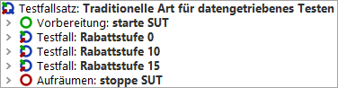
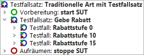
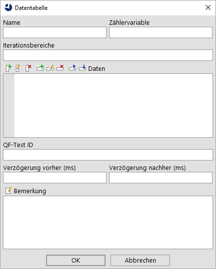
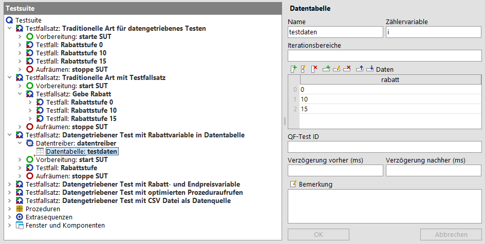
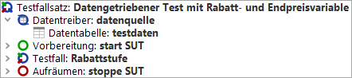
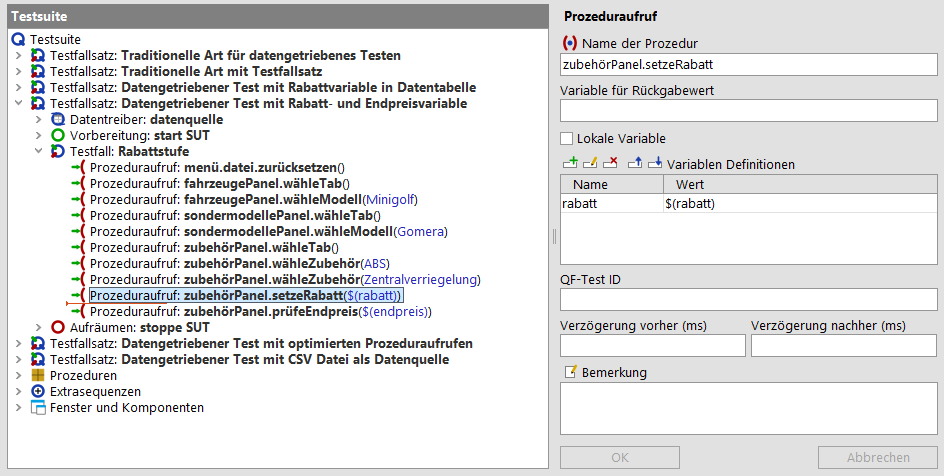
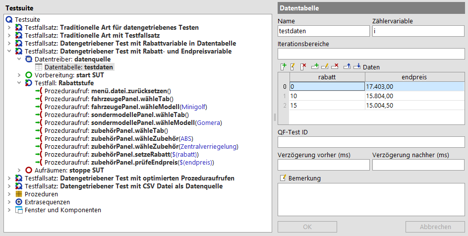
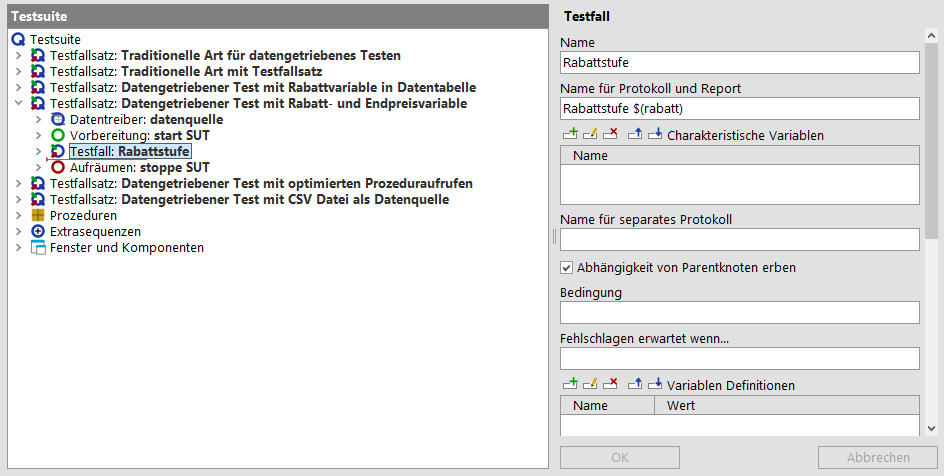
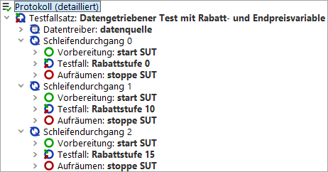

| Version 6.0.3 |
Dieses Kapitel erklärt, wie man datengetriebenes Testen mit QF-Test verwirklichen kann.
Sie finden unter qftest-6.0.3/doc/tutorial/advanced-demos/de/datadrivenTesting.qft die hier
gezeigten Testfälle.
In der zweiten mitgelieferten Testsuite
qftest-6.0.3/doc/tutorial/datadriver.qft finden Sie weitere Beispiele, wie das Auslesen
einer Exceldatei oder einer Schleife um Testfälle.
Bitte achten Sie darauf, dass Sie alle Testsuiten vorher in einen projektspezifischen Ordner kopieren und diese dort modifizieren.
Die Anwender des JCarConfigurator können unterschiedliche Rabattstufen gewähren. Der Testdesigner hat drei Rabattstufen definiert, die getestet werden sollen.
Diese Rabattstufen sind 0%, 10% und 15%.
Der Ablauf, um einen Rabatt zu gewähren, ist für jede dieser drei Rabattstufen derselbe. Daher können wir denselben Testfall benutzen, um diese zu testen. Der einzige Unterschied ist der eingegebene Rabattsatz und der zu prüfende Preis. Wir sollten denselben Testfall für jede Rabattstufe benutzen, um Seiteneffekte zu vermeiden, die bei unterschiedlichen Implementierungen der Testfälle auftreten können. Darüber hinaus sparen wir uns auch den Implementierungsaufwand zum Erstellen mehrerer Testfälle.
Der logische Testfall, d.h. die Schritte des Testfalles, sehen folgendermaßen aus:
Die folgenden Abschnitte zeigen nun die Implementierung dieses Szenarios.
In QF-Test steht ein 'Testfall' für einen Testablauf zusammen mit einem speziellen Testdatensatz. Wenn man zwei Testdatensätze testen möchte, so muss man zwei 'Testfälle' erstellen. Diese Testfälle können auch in einem 'Testfallsatz' zusammengefasst werden.
Bei der konventionellen Lösung implementiert man also einen 'Testfall' pro Rabattstufe. Das sieht dann so aus:
|
|  | ||
|
| Abbildung 28.1: Konventionelle Methode für datengetriebenes Testen | ||
Wir sehen für jede der drei Rabattstufen genau einen 'Testfall' Knoten. Diese drei Knoten sind in einem 'Testfallsatz' zusammengefasst. Der 'Testfallsatz' Knoten beinhaltet auch die 'Vorbereitung' und die 'Aufräumen' Knoten, welche das SUT vor jedem 'Testfall' starten und nach jedem 'Testfall' stoppen. Dies geschieht, um sicherzustellen, dass die Vorbedingungen jedes einzelnen Testfalles dieselben sind. Wenn Sie die SUT nicht nach jedem Testfall neu starten wollen, dann können Sie die drei Testfälle in einem weiteren 'Testfallsatz' zusammenfassen, wie Sie hier sehen können:
|
|  | ||
|
| Abbildung 28.2: Konventionelle Methode mit einem verschachtelten 'Testfallsatz' | ||
Das Kapitel Abhängigkeiten: Automatisches Sicherstellen der korrekten Vorbedingungen jedes Testfalles zeigt Ihnen eine elegantere und effizientere Art, Vor- und Nachbedingungen von Testfällen zu organisieren.
Wie Sie sich sicher vorstellen können, wird es mit dieser Methode ziemlich mühsam sein, die Testdaten zu verwalten. Insbesondere, wenn Sie eine neue Rabattstufe anlegen oder eine Stufe wegfällt. Ein weiterer Nachteil dieses Ansatzes ist, dass die Testdaten in QF-Test gehalten werden.
Das nächste Kapitel Datentreiberkonzept zeigt Ihnen nun, wie Testsuiten organisiert werden können, in denen nur ein 'Testfall' implementiert wird und die Testdaten unabhängig vom 'Testfall' abgelegt werden.
Wenn man nun einen Testfall starten möchte, der mehrere Testdatensätze verwendet, muss man zuerst die Testdatensätze in einer Datenquelle definieren. Diese Datenquelle muss innerhalb eines 'Datentreiber' Knotens definiert werden. QF-Test bietet Standardverknüpfungen für Datenbanktabellen, CSV Dateien, Excel Dateien und für innerhalb von QF-Test definierte Datentabellen an. Die QF-Test Datentabelle speichert die Testdaten in der Testsuite selbst. Wir werden diese Datenquelle für unser folgendes Beispiel nutzen. Jede andere Datenquellenart, z.B. XML Dateien, kann mit einem selbstimplementierten Skript angebunden werden.
Fügen Sie zuerst einen neuen 'Testfallsatz' in die Testsuite ein. Sie können den Namen frei wählen.
Ein 'Datentreiber' Knoten kann in einen 'Testfallsatz' mittels Rechtsklick und Auswahl von »Knoten einfügen«-»Datentreiber«-»Datentreiber« eingefügt werden. Sie müssen nur noch einen Namen für diesen Knoten definieren. Die eigentliche Testdatenquelle kann als Kindknoten des 'Datentreiber' Knotens eingefügt werden. In unserem Fall werden wir eine 'Datentabelle' mittels Rechtsklick und Auswahl von »Knoten einfügen«-»Datentreiber«-»Datentabelle« einfügen. Sie sollten nun diesen Dialog erhalten:
|
|  | ||
|
| Abbildung 28.3: Dialog für eine Datentabelle | ||
Zuerst müssen wir einen Namen für diese Datenquelle spezifizieren. Wir sollten auch eine 'Zählervariable' definieren. Die Zählervariable beinhaltet den Index des aktuell verwendeten Datensatzes während der Testausführung.
Der nächste Schritt ist die Definition der Testdaten. Dafür klicken Sie auf den Knopf 'Spalte einfügen'. Das ist der erste Knopf im 'Daten' Bereich. Dann müssen Sie einen Namen für diese Spalten definieren. Setzen Sie den Namen auf 'rabatt'. Danach drücken Sie auf 'OK' und die Spalte sollte eingefügt worden sein. Diese Spalte wird später der Variablenname in den Tests sein.
Nun klicken Sie auf den 'Zeile einfügen' Knopf, um eine neue Zeile einzufügen. Jede Zeile wird für einen eigenen Testdatensatz stehen, d.h., dass wir jetzt drei Zeilen einfügen müssen. Die erste Zeile soll 0%, die zweite 10% und die dritte 15% beinhalten.
Die Tabelle sollte nun so aussehen:
|
|  | ||
|
| Abbildung 28.4: Die gefüllte Datentabelle | ||
Nun kommen wir zur eigentlichen Implementierung des Testfalles. Dafür müssen wir nur einen 'Testfall' zum 'Testfallsatz' hinzufügen.
Hinweis Wenn sie einen 'Testfall' zu einem 'Testfallsatz' hinzufügen wollen, dann müssen Sie auf den geschlossenen 'Datentreiber' klicken, um den 'Testfall' einzufügen.
Der 'Testfall' wird die Prozeduraufrufe für die benötigten Testschritte beinhalten. Sie können auch die 'Vorbereitung' und die 'Aufräumen' Knoten aus dem vorigen 'Testfallsatz' in den neuen 'Testfallsatz' kopieren. Der gesamte 'Testfallsatz' sollte nun so ausschauen:
|
|  | ||
|
| Abbildung 28.5: 'Testfallsatz' mit 'Datentreiber' | ||
Jetzt müssen wir noch die Variable 'rabatt', welche in der Datentabelle definiert wurde, verwenden. Wir sollten diese Variable als Parameter für den 'setzeRabatt' Prozeduraufruf hinzufügen. Wenn wir das gemacht haben, sollte unser Test so aussehen:
|
|  | ||
|
| Abbildung 28.6: Der $(rabatt) Parameter | ||
Nun sind wir bereit den 'Testfallsatz' zu starten.
Nach der Ausführung der Tests sollten wir mindestens zwei Fehler bekommen. Diese Fehler kommen daher, dass das 'Endpreis' Textfeld natürlich unterschiedliche Werte enthält wir aber immer denselben Wert prüfen. In unserem Fall sollte also der erwartete Wert für das 'Endpreis' Textfeld als zweite Spalte in die 'Datentabelle' eingefügt werden.
|
|  | ||
|
| Abbildung 28.7: Vollständige Datentabelle | ||
Ein weiterer Nachteil ist, dass wir im HTML Report und im Protokoll immer denselben Testfallnamen sehen. Um dies zu vermeiden, sollten wir die Eigenschaft 'Name für Protokoll und Report' des 'Testfall' Knotens editieren. In dieser Eigenschaft sollten wir zumindest eine datensatz-spezifische Variable verwenden, z.B. 'rabatt' in unserem Fall. Lassen Sie uns dieses Attribut also auf 'Rabattstufe: $(rabatt)' setzen.
|
|  | ||
|
| Abbildung 28.8: Name für Protokoll und Report Eigenschaft | ||
Wenn wir den Test nun ausführen, sollten wir keine Fehler mehr erhalten und im Protokoll sowie im HTML Report sollte jeder Testfall einen eigenen Namen haben. Das erzeugte Protokoll sollte folgendermaßen aussehen:
|
|  | ||
|
| Abbildung 28.9: Protokoll mit unterschiedlichen Namen für 'Testfälle' | ||
Wenn Sie nur einen 'Testfall' mit einem Datensatz ausführen möchten, ohne den gesamten 'Testfallsatz' auszuführen, dann sollten Sie Defaultwerte als globale Variablen des 'Testsuite' Knoten definieren.
Hinweis Wenn der Name der Variable im 'Datentreiber' der selbe ist, wie der des Prozedurparameters,
dann können Sie die Variablendefinition beim 'Prozeduraufruf' weglassen. Das kann gemacht werden, weil die Variablen des
'Datentreiber' Knotens auch auf den Variablenstack von QF-Test gelegt werden und so jeder Schritt innerhalb des
'Testfall' Knotens auf diese Variablen zugreifen kann. Sie können eine solche Implementierung im 'Testfallsatz'
'Datengetriebener Test mit optimierten Prozeduraufrufen' in der Demotestsuite
qftest-6.0.3/doc/tutorial/advanced-demos/de/datadrivenTesting.qft sehen.
In der Demotestsuite
qftest-6.0.3/doc/tutorial/advanced-demos/de/datadrivenTesting.qft
finden Sie auch einen 'Testfallsatz', der eine CSV Datei als Datenquelle nutzt.
Das 'Datentreiber' Konzept von QF-Test ermöglicht es dem Benutzer, logische Testfälle zu erstellen und die Testdaten von der eigentlichen Testimplementierung separiert zu halten.
Es ist auch möglich, verschachtelte 'Datentreiber' Knoten in 'Testfälle' zu verwenden. Dies kann realisiert werden, indem man einen 'Testschritt' Knoten zu einem 'Testfall' hinzufügt. Der 'Testschritt' Knoten kann dann den 'Datentreiber' beinhalten.
Eine detaillierte Beschreibung von datengetriebenem Testen finden Sie im Handbuch im Kapitel Datengetriebenes Testen.
In der zweiten mitgelieferten Testsuite
qftest-6.0.3/doc/tutorial/datadriver.qft finden Sie weitere Beispiele, wie das Auslesen
einer Exceldatei oder einer Schleife um Testfälle.
| Letzte Änderung: 6.9.2022 Copyright © 2002-2022 Quality First Software GmbH |